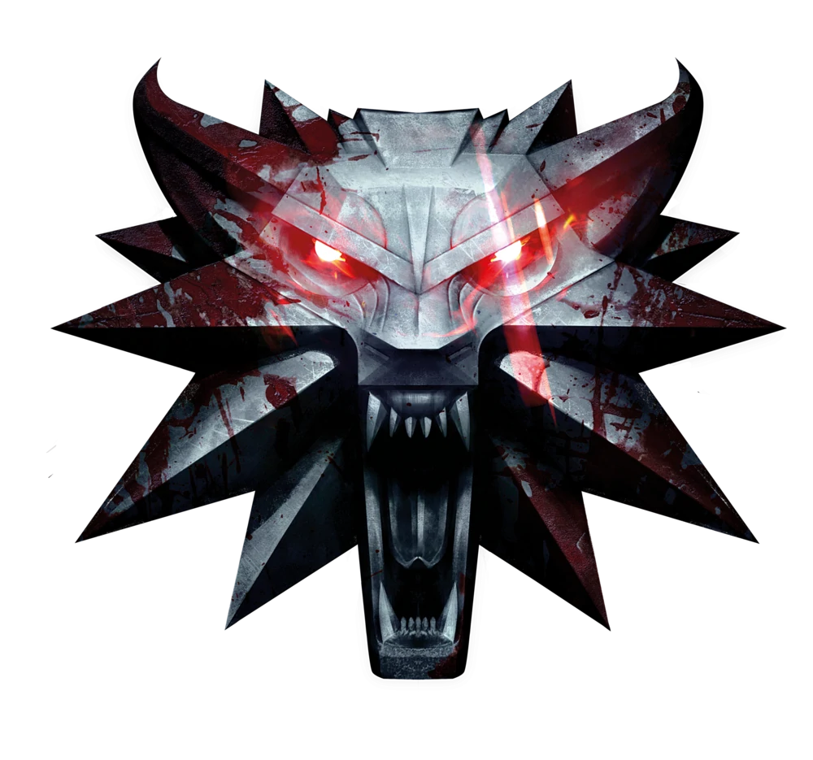

The Medallion

A witcher medallion is a silver symbol of the witchers' profession. Each one is shaped to represent
the
school a witcher comes from. It is sensitive to magic, vibrating and tugging on its chain when
spells are
being cast or magical beings, like genies or even mages, are present. This magic medallion is given
to
every young witcher candidate who has passed the Trial of the Grasses.
To know more about the witchers' medaillon click the picture above or follow this
link: Witcher Medallion